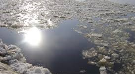
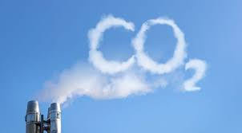
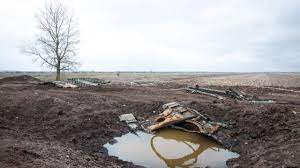

Пластик та глобальне потепління — основні загрози для Світового океану
88% з 297 досліджених морських видів страждають від пластикового
забруднення, а підвищення температур спричинило збої в екосистемах
океану.
Одним з основних життєво важливих елементів навколишнього природного
середовища є атмосферне повітря. Забруднення атмосфери породжує
наступні екологічні проблеми: - забруднення повітря та заміна його
складу внаслідок промислових та інших викидів у атмосферу; -
скорочення розмаїття рослинного і тваринного світу та зміни в його
генофонді; - зменшення біологічної продуктивності ландшафтів; -
погіршення гігієнічних та санітарно-епідеміологічних умов
життєдіяльності людини та інших живих організмів.


Пластик та глобальне потепління — основні загрози для Світового океану
88% з 297 досліджених морських видів страждають від пластикового
забруднення, а підвищення температур спричинило збої в екосистемах
океану.